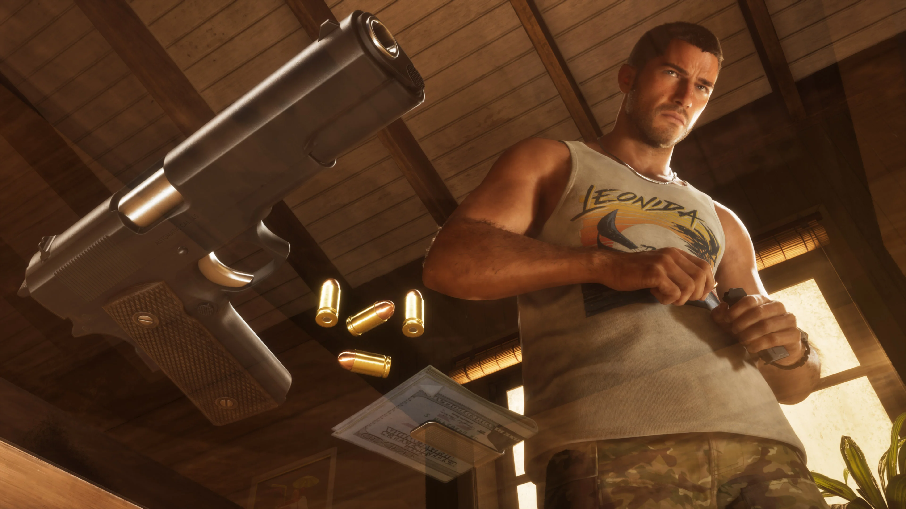
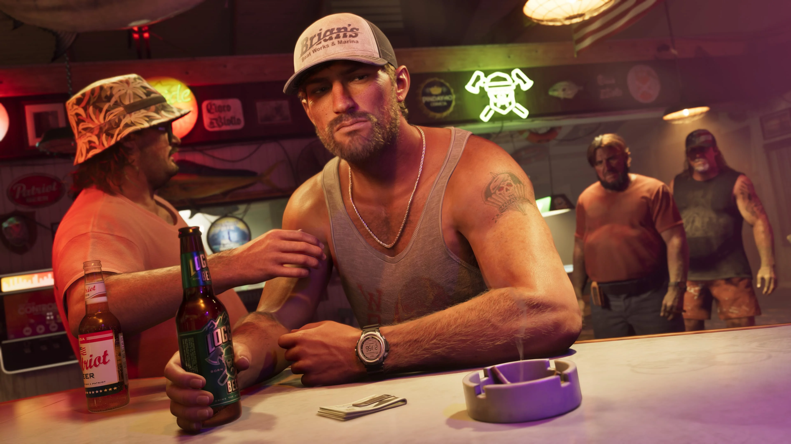
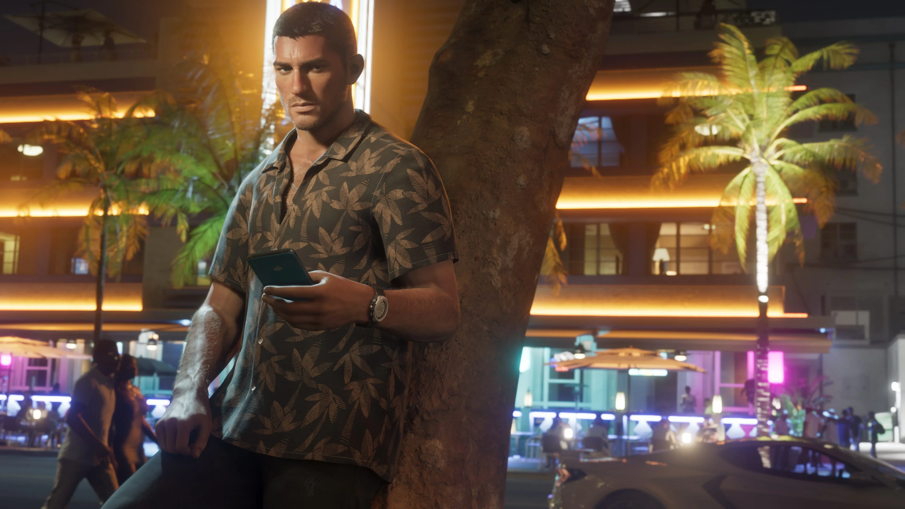
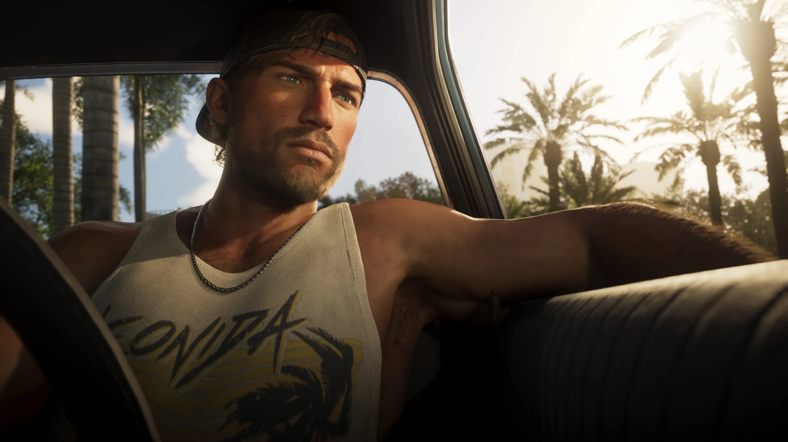
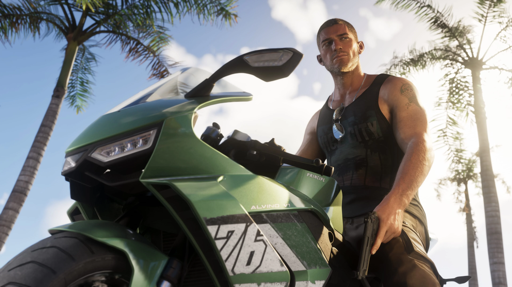

Lucia Caminos
Lucia divide com Jason o centro da história de GTA VI. Depois que um serviço dá errado, os dois precisam depender um do outro para enfrentar a situação.
Conhecer Lucia

Jason Duval é um dos protagonistas de Grand Theft Auto VI. Ele cresceu cercado por golpistas e criminosos e, depois de uma passagem pelo Exército, acabou nas Leonida Keys trabalhando para traficantes locais.
Jason gostaria de uma vida mais fácil, mas as coisas continuam se complicando. Conhecer Lucia Caminos pode acabar sendo a melhor — ou a pior — coisa que já aconteceu com ele.
Jason cresceu cercado por golpistas e criminosos. Depois de uma adolescência problemática, passou pelo Exército tentando deixar aquela fase para trás.
Mais tarde, ele acabou nas Keys fazendo o que já conhecia: trabalhando para traficantes locais.
A apresentação oficial deixa claro que Jason está acostumado a esse ambiente, mas também sugere que talvez tenha chegado a hora de tentar algo diferente.
Ele quer uma vida mais fácil. O problema é que, para Jason, as coisas parecem continuar ficando cada vez mais complicadas.


Antes dos acontecimentos centrais apresentados para GTA VI, Jason já possui ligações importantes nas Leonida Keys.
Brian Heder, um veterano traficante da região, permite que Jason viva gratuitamente em uma de suas propriedades, desde que ele ajude em cobranças e intimidações locais.
Jason também é amigo de Cal Hampton, que por sua vez é associado de Brian.
Essas relações ajudam a mostrar o ambiente em que Jason vive quando sua história com Lucia começa a ganhar proporções muito maiores.
Jason e Lucia estão no centro da história apresentada para Grand Theft Auto VI.
Depois que um serviço aparentemente simples dá errado, os dois acabam no lado mais sombrio do lugar mais ensolarado dos Estados Unidos.
A situação os coloca no centro de uma conspiração criminal que se estende por Leonida e faz com que precisem depender um do outro mais do que nunca para conseguirem sair vivos.
No perfil oficial de Jason, a Rockstar resume a incerteza dessa relação de forma direta: conhecer Lucia pode acabar sendo a melhor ou a pior coisa que já aconteceu com ele.
Conhecer Lucia Caminos
Relações mencionadas diretamente nos materiais oficiais apresentados para Grand Theft Auto VI.
Lucia divide com Jason o centro da história de GTA VI. Depois que um serviço dá errado, os dois precisam depender um do outro para enfrentar a situação.
Conhecer LuciaCal é amigo de Jason e também associado de Brian. Ele prefere ficar em casa, acompanhando comunicações da Guarda Costeira e mergulhando em suas próprias teorias.
Conhecer CalBrian é um veterano traficante das Leonida Keys. Jason vive gratuitamente em uma de suas propriedades em troca de ajudá-lo com cobranças e intimidações locais.
Conhecer BrianSeleção de screenshots oficiais de Jason Duval publicados pela Rockstar Games.



Esta área reúne apenas informações apresentadas oficialmente para o personagem.
Jason é um dos personagens centrais de GTA VI ao lado de Lucia Caminos.
Jason passou pelo Exército tentando deixar para trás uma adolescência problemática.
Ele acabou nas Keys trabalhando para traficantes locais.
Brian permite que Jason viva gratuitamente em uma de suas propriedades em troca de serviços locais.
Cal é amigo de Jason e também associado de Brian.
Conhecer Lucia pode acabar sendo a melhor ou a pior coisa que já aconteceu com Jason.
As informações e imagens desta página são baseadas em materiais oficiais publicados pela Rockstar Games.
Página oficial que apresenta Jason Duval, seu passado, sua vida nas Keys e suas relações com Lucia, Cal e Brian.
Ver perfil oficialBiblioteca oficial de mídia da Rockstar Games, com screenshots identificados como Jason Duval e uma coleção separada de imagens de Jason e Lucia.
Ver screenshots oficiais